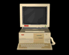

This page will one day contain an overview of all my computers and hardware projects, but today is not yet that day. Since you're already here though, here's an overview of some of my machines.
Click on the names to expand details.

Main PC (Titania) 
Case: Fractal Design Define R5 (black w/ side window and titanium front plate)
CPU: Ryzen 7 5700G
GPU: AMD Radeon RX 6700 XT
Motherboard: MSI X470 GAMING PLUS
RAM: 32GB (2x16) 3000Mhz
OS: Windows 10 Enterprise
Storage: 1x 2TB NVME SSD, 1x 500GB SATA M.2 SSD 1x 240GB SATA SSD, 1x 1TB 7200RPM HDD
PSU: EVGA 750 Watt
Other: 1x Blu Ray Drive, 1x Card Reader
Custom Windows 98 machine (Agrias)
CPU: Pentium III 933MHz
GPU: nvidia geforce2 MX400
Sound Card: Creative Labs SoundBlaster Live! 5.1
Motherboard: ASUS CUSL2
RAM: 512MB
OS: Windows 98 Second Edition
Storage: 1x 75GB IDE HDD
Other: 2x CDROM Drive, 1x 3.5 Floppy Drive
Apple Power Macintosh G3 (Ereshkigal) 
CPU: PowerPC 750 (G3) 300MHz
GPU: ATi Rage Pro
RAM: 320MB
OS: Mac OS 9.2.2
Storage: 1x 10GB IDE HDD
Other: 1x CDROM Drive, 1x 3.5 Floppy Drive, 1x Zip Drive, 1x Wings A/V Personality Card
Apple iBook G4 (Inanna) 
CPU: PowerPC 7447a (G4) 1.33GHz
GPU: ATi Mobility Radeon 9550
RAM: 1.5GB
OS: Mac OS X 10.4 Tiger
Storage: 1x 120GB SATA SSD
***JUMP PAD ACTIVATION INITIATION START***
***TRANSPORT WHEN READY***
|